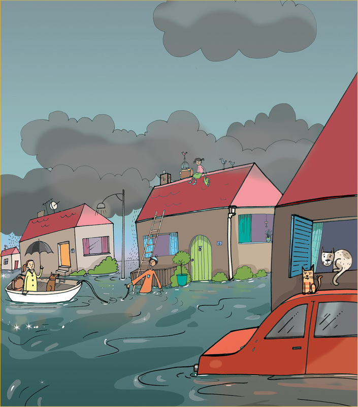

Mini-pat: shelters for refugees
For the next three weeks, you will investigate building techniques: past and present, making fabric waterproof and the burning characteristics of textiles. Then you will design and build a model emergency shelter. You will work on your own and your teacher will assess your work.

Figure 1: An informal settlement during a fire
Shack dwellers face many problems. Fires are particularly dangerous. Shack fires kill many people every year. People in shacks use open fires and candles for heat and light. When a candle falls over or an open fire is not dampened down to kill all the flames, a fire starts. These fires spread very quickly because shacks are built too close to each other. There are also no proper roads in between the shacks. This makes it difficult for fire fighters to reach the fires in order to put the fires out.

Figure 2: A town flooded after very heavy rainfall
People sometimes build houses on an open piece of land without thinking if it is a good place to live. Sometimes the land is low lying and there is nowhere for the storm water to go when it rains heavily. The area becomes flooded and the water runs through their homes. This causes a lot of damage to the few possessions they have. Often people don't want to leave their flooded shacks because they are scared that their possessions will be stolen while they are living in temporary housing.
Week 1
Investigate part 1
Let us look how our ancestors lived (30 minutes)
The Khoi (Khoikhoi or KhoeKhoe), which means "people people", and the San (Bushmen or Sho), which means "men without domestic livestock", were the first people to live in southern Africa. They were the earliest inhabitants of our country and have been living here for thousands of years.
Both groups were nomadic. Nomads do not live in one place for a long time. They move from a place in search of food for themselves and their animals. The Khoi people owned livestock. They moved in search of good grazing for their cattle and goats. The San people were hunter-gatherers. They did not have livestock. The men tracked and hunted wild animals. The women collected mainly eggs, roots and bulbs.
Both groups built dome-shaped huts made from green sticks tied together at the top. These frame structures were covered with reeds and grasses which grew around them. Some of the Khoi wove grass into mats, which they used to cover the frames. The grasses or reeds made the huts windproof and waterproof. When they moved on they left the huts behind, so their huts were not made to last a long time. These were not permanent dwellings.

Look at the homes of the khoi and the san people
Work in pairs.
1. What materials did the Khoi and the San use to build their homes?
2. Where did they find the materials they used?
3. Were the building materials suitable for the environment where the Khoi and San lived? Explain your answer.
4. What happened to the huts and materials they left behind once they moved on to another place?
5. Do you think that any of the materials would have harmed the surrounding environment where they were used? Give a reason for your answer.
6. Why did the Khoi and the San people need their structures to be temporary?
Investigate part 2
Permanent homes of our indigenous people (30 minutes)
About 2000 years ago, people slowly migrated from northern Africa to the south. Four main groups ended up in the area that is now South Africa: Nguni, Sotho, Venda and Tsonga.
These are the forefathers of most of our indigenous cultures. They grew crops, mainly grains like maize for food. They kept cattle for meat and milk. So they needed to live close to rivers or streams and in areas where the land was fertile.
Migrate: to permanently move from one place in a country to another place or another country.
Indigenous: people originating in a particular country.
Because they lived in one place, they built permanent homes.
Some people built dome-shaped huts. They did this by:
- making a framework with upright branches,
- using thin green saplings to make a fine mesh between the upright branches, which makes a strong framework. This makes a strong framework that lasts for a long time, and
- covering the framework with thatch and then with plaited grass mats. The two layers of covering insulate the huts against extreme temperatures and keep the people warm and dry.

Other people built round "rondavel" homes.
- Saplings were used for the straight upright walls.
- Gaps between the saplings were filled with clay.
- The walls were plastered on the inside and outside with clay.
- A cone-shaped roof was made from a framework of wooden sticks covered with grass, reeds or thatch.

Figure 7: Rondavel hut
Immigrant: a person who moves to another country permanently
Ndebele people came into contact with immigrants from Europe. They started to build rectangular homes.
- The walls were built with mud bricks andplastered with mud.
-
The
outside walls were decorated with brightlycoloured designs.
This makes these homes distinctive and attractive.
Something is distinctive if it has a special property or quality that makes it stand out from other similar things.
Figure 8: Rectangular Ndebele hut

Figure 9: Corbelled hut
Figure 10: Matjieshut
Matjiehuts were temporary houses built by the Nama people of the Richtersveld. These were also built by white farming families when they needed temporary houses.
Nomadic farmers in the northern Cape built corbelled houses from flat stones, with a minimum amount of mud-clay to bond them. The style is more than 4000 years old, and comes from the Mediterranean countryside.
Look at the huts built by our indigenous people
1. Why did these people build permanent homes?
2. What makes their dome-shaped huts better than those that the Khoi and the San people built?
3. Why do the people that build ‘rondavel’ huts choose to use mud as building material?
4. What is the advantage of using thatch as a building material?
5. What is special about the homes of the Ndebele people?
6. Are the materials used to build these homes suitable for building homes? Explain your answer.
7. Would any of the building materials they use harm the environment? Explain your answer.
8. Do you think the early people who moved from North Africa were immigrants like the people from Europe that came much later? Explain your answer.
Investigate part 3
Dwellings in informal settlements (30 × 2 = 60 minutes)
Many people migrate from rural areas to large towns and cities looking for a better life. They arrive with no money and no place to live. They build temporary places to live on open pieces of land near the towns. As more people arrive, more houses are built until there is a whole group of houses close to each other. We call this group of houses an informal settlement.
These informal settlements have no roads, no water supply, no toilet facilities and no waste removal. These temporary houses are commonly called shacks.
People use materials that they find in scrap yards and what they can afford to buy. Some examples are: cardboard, plastic sheeting, wooden planks, old tyres, pieces of polystyrene foam and sheets of corrugated iron.
WARNING
Asbestos is very harmful to people. The fine fibres irritate the lungs and can cause lung disease and cancer.
Its only advantage is that it is heat and fire resistant, but this does not make up for its health hazard.
These materials have many disadvantages:
- Polystyrene foam and cardboard catch fire and burn easily.
- Dry wood burns quickly too.
- When tyres get old and deteriorate, they give off unhealthy fumes.
- Plastic and tyres give off black fumes when they burn. The fumes are very unhealthy to breathe in.
- Old sheets of material made of asbestos are sometimes taken from demolished buildings and used to make walls and ceilings. Asbestos is very harmful to humans and should be avoided as a building material.
Figure 11
Look at the matetrials used to build shacks
1. Look at the photographs of shacks and informal settlements on the previous page. Complete the table about the different materials. Do not use the example that has been completed for you.
|
Material |
What is the material used for? |
Is it suitable or not suitable for what it is being used? |
|
Bricks |
To hold down a roof |
Bricks are not heavy enough to hold down a roof during a strong wind. |
2. Do you think the materials used by the Khoi and San people and the indigenous people are better or worse than those used to build shacks? Give reasons for your answer.
Week 2
Let us help the disaster management team (30 minutes)
The scenario
The disaster management team wants to be better prepared for emergency situations. They need emergency shelters that can be moved easily to disaster areas. The shelters will be stored until there is a need for them. They must be set up and packed away quickly and easily.
The health of the disaster victims who will be housed in the shelters is important. The shelters have to be sturdy and windproof and waterproof. They must be safe and large enough for six people to live in for up to a month.
They have asked for help with a design. The specifications are:
- design a shelter,
- build a model of the design,
- the structure must be covered with fabric, that you have made waterproof, and
- the shelter should keep people safe and healthy.
The first task is to find out how to make fabric waterproof. The second task will be to find ways of making fabric fireproof. Your teacher did some research and found the following information.
Different ways to make fabric waterproof
- Spray fabric with a commercial silicone spray.
- Rub candle wax or petroleum jelly (Vaseline) on the fabric.
- Paint fabric with any PVA paint.
- Cover fabric with transparent plastic contact sheeting. This plastic sheeting has a smooth front and a sticky back. You can also call it sticky-backed plastic.
- Mix ½ cup cooking oil and ¼ cup turpentine in a spray bottle. Spray the fabric a few times with the mixture.
Different ways to make fabric less likely to catch fire and burn
- Mix 2 tablespoons borax with 1 cup hot water ina spray bottle. Spray fabric a few times until soaked.Leave to dry and spray again.
- Mix 2 tablespoons borax and 1 tablespoon boric acidwith 1 cup hot water in a spray bottle. Spray thefabric, leave to dry and spray again. Repeat a few times.
-
Paint
fabric with PVA paint and cover the fabric with sand on
both sides while the paint is still wet.
Something that you add to make fabric or something else difficult to burn is called a "fire retardant".
Get ready to conduct water and fire retardant experiments in your next lesson
1. You will work in groups. Some groups will conduct the waterproof experiments and other groups the fire retardant experiments. Work in groups of eight. Each group will split up into four pairs. Get your groups and pairs together.
2. Use identical pieces of cotton fabric for all theexperiments. Scrap pieces of canvas or denimwill be ideal. Each pair will need a piece of fabricmore or less 10 cm × 10 cm.
3. You will need lots of old newspapers or magazinesto work on.
To compare the different ways of treating fabric in a fair way, you need to use the same type of materials for each treatment.


Figure 12: Some materials for waterproofing tests


Figure 13: Some materials for fire retardant tests
Waterproofing and fireproofing (30 minutes)
In this lesson, you will prepare the samples for testing later.
Groups that will waterproof fabric:
- Pair A: You will need three pieces of fabric. Apply candle wax to the first piece, petroleum jelly to the second piece, and PVA paint to the third piece.
- Pair B: Apply sticky-backed plastic to a piece of fabric.
- Pair C: Apply cooking oil and turpentine to a piece of fabric.
Leave the samples to dry on newspaper. Write the method you applied on your sample on the newspaper. That way you will know which method was applied to each piece of fabric.
Groups that will make fabric fire retardant:
- Pair D: Apply borax solution to a piece of fabric.
- Pair E: Apply borax and boric acid solution to a piece of fabric.
- Pair F: Apply PVA paint and sand to a piece of fabric.
Leave the samples to dry on newspaper. Write the method you applied on your sample on the newspaper. That way you will know which method was applied to each piece of fabric.
Investigate part 4
In this lesson, you will test your samples to find out how well the different methods worked. Use one piece of fabric that was not treated by any method to help compare the effectiveness of the treatments. We call this the control sample.
Appoint one pair to do the testing. The other group members have to record what they observe.
Testing samples (30 minutes)
Test waterproofed samples
Use a spray bottle filled with water. Spray the samples until they are wet on top. Lift up the sample and observe the newspaper underneath. What do you see?
|
Method applied |
Paper stays dry |
Paper slightly wet |
Paper very wet |
|
Control sample (untreated fabric) |
|||
|
Candle wax |
|||
|
Petroleum jelly |
|||
|
PVA paint |
|||
|
Sticky-backed plastic |
|||
|
Cooking oil and turpentine |
1. The most effective method is:
2. The least effective method is:
Test fire retardant samples
You cannot set alight the whole sample. That would be too dangerous. Cut a thin strip from each sample. The strip of fabric must be less than 1 cm wide.
Some of the samples may burn. Wear safety goggles to protect your eyes and oven gloves to protect your hands.
You will need:
- a metal sheet, enamel plate or piece of wood to work on. Do not work on newspaper, since paper burns easily.
- a candle and matches.
- a pair of tongs or a wooden clothes peg to hold the sample over the flame.
Hold the sample over the flame for a few seconds. Observe how it reacts while in the flame and once removed from the flame.
|
Method applied |
Reaction while in the flame |
Reaction once removed from the flame |
|
Control sample (untreated fabric) |
||
|
Borax solution |
||
Borax and boric acid solution |
||
|
PVA paint and sand |
1. The most effective method is:
2. The least effective method is:
How do different textiles burn?
For this experiment, you need the same equipment that you used to test your fire retardant samples. A few fibres of different textiles, for example woollen cloth or knitting yarn, cotton fabric, and synthetic fabric such as nylon or polyester will be useful.
One person will conduct the experiment while the rest of the class will observe and record their observations in the table on the next page.
Follow the same safety rules as you did when you tested your fire retardant samples.
|
Sample |
Approaching the flame |
In the flame |
When removed from the flame |
Smell |
Remains after burning |
|
Sample 1 |
|||||
|
Sample 2 |
|||||
|
Sample 3 |
Compare your observations with the information below. Now you will know what textiles your samples were made of. Fill in the textiles in your observation table.
|
Sample |
Approaching the flame |
In the flame |
When removed from the flame |
Smell |
Remains after burning |
|
Animal fibres such as wool |
Shrinks away |
Burns slowly |
Smoulders and then the flame dies |
Burning hair |
Dark bead that turns to powder when touched |
|
Plant fibres such as cotton |
Pulls towards the flame |
Burns quickly |
Continues to burn |
Paper burning |
Grey, feathery ash |
|
Synthetic fibres such as nylon and polyester |
Tip starts to melt |
Burns and melts |
Continues to melt |
Acid |
Hard bead of plastic |
1. Which of the textiles is the least flammable?
In the next lesson, you will waterproof a piece of fabric that you will use to cover your model. You will need a piece of fabric at least 50 cm × 50 cm in size.
Make part 1
Waterproof the fabric for the model (30 minutes)
You have to make fabric waterproof, so that it is ready to be used to cover your model emergency shelter. Use a piece of cotton fabric at least 50 cm × 50 cm. The fabric need not be one piece. You may sew pieces together to create the right-sized square. Take care to make strong joints that you can waterproof well.[10]
Week 3
Design part 1
Design and sketch the model shelter (30 minutes)
Write a design brief and specifications
Go back to the situation and read through it carefully. Also make a note what the disaster management teams expect from you. Remember that you are building a model, so you must consider the scale of the model to the shelter you will be designing. If you are using your cloth of 50 cm × 50 cm, and you use a scale of 10:1, the actual shelter would be 5 m × 5 m. Would this be big enough for six people?
1. Write a design brief.
2. Identify and list the specifications you have been given.
Design part 2
Design sketch (30 minutes)
Make a sketch of your design
1. Make a rough pencil sketch of a possible solution on this page.
2. Label your drawing to show the different parts of the model shelter.
3. Identify the materials you will use.

Make part 2
Construct the model (30 minutes × 2 = 60 minutes)
Build your model
1. Collect all the materials and equipment you need for your model.
2. Decide how you are going to go about building the model.
3. Think about any safety measures you have to consider.
4. Only now can you start building the model.
5. Once the model is finished, check that you have met all the specifications. The specifications become the features of the model emergency shelter.
6. Make sure that you considered the health and safety of the disaster victims.
7. Make adjustments if needed.
Your teacher will look at the following
- Can the model be transported easily?
- Can it be set up and packed away quickly and easily?
- Can six people live in it comfortably for a month?
- Is it windproof and waterproof?
- Is the waterproofing effective? (Consider the health of the victims.)
- Is it safe? (Consider the dangers of fire.)
- Is it well built and sturdy?
Good luck and do your best!